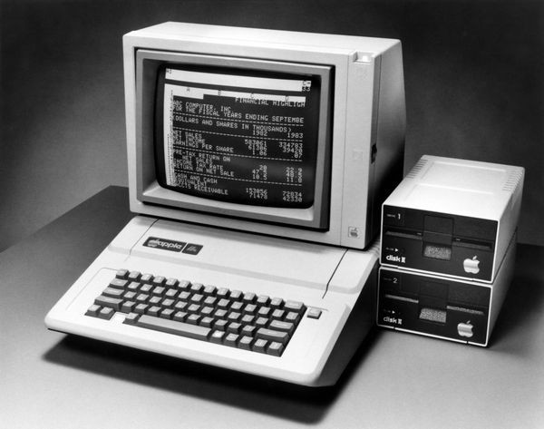

O aplicativo de edição de planilha é um dos casos de uso mais importantes na história do computador pessoal. Enquanto ele realiza operações muito simples, como as de uma calculadora de mesa, as fórmulas armazenadas em suas células contêm referências a outras células, revelando assim a grande capacidade um computador. Isso permite que mesmo usuários com pouco ou nenhum conhecimento de programação automatizem tarefas e processem grandes volumes de dados.

Computador pessoal Apple II executando o programa de planilhas VisiCalc
Enquanto utilizar uma editor de planilhas possa ser simples, implementar um aplicativo de planilhas não é trivial. Como as fórmulas podem se referir a outras células, sempre que uma delas for alterada, é necessário atualizar todas as suas dependentes.
Isso é particularmente importante porque um usuário inexperiente pode acabar criando dependências cíclicas. Essa situação ocorre quando uma célula se refere a si mesma ou a alguma outra, mas essa outra depende da primeira! Nesses casos, é necessário detectar e mostrar o erro.
Para complicar ainda mais, nos aplicativos modernos (Google Sheet, Excel Online etc.), dezenas de usuários podem acessar e modificar planilhas simultaneamente. Por isso, é importante realizar cada operação na planilha tão eficientemente quanto possível. Isso é um problema que ainda hoje não foi solucionado em definitivo! Mas há várias estratégias para amenizar esse problema.
Entre as estratégias mais populares, estão as transformações operacionais. A ideia é simples. No primeiro acesso, toda a planilha é carregada na memória de um servidor. Depois, a cada operação de leitura ou de escrita, esse servidor manipula a planilha e devolve o novo valor da célula afetada.
Nesta tarefa, você deve realizar uma sequência de transformações operacionais.
Formato da planilha
Nesta tarefa, uma planilha armazena apenas números inteiros. Células que começam com o caractere = correspondem a uma fórmula que consistem de expressões aritiméticas com inteiros, referências a outras células, operações + ou - e parênteses.
Assim como na maioria dos aplicativos de planilha, a referência de uma célula tem o formato <coluna><linha>, onde a coluna é uma letra de A até Z e a linha é um número inteiro começando de 1. Por exemplo, na planilha abaixo, a célula A2 contém o valor 4 e a célula B2 contém a fórmula ( A1 - ( B1 + C1 ) ), que se resolve para -4.
| A | B | C | |
|---|---|---|---|
| 1 | 1 | 2 | 3 |
| 2 | 4 | = ( A1 - ( B1 + C1 ) ) | 6 |
| 3 | = C3 | 8 | = A3 |
As células A3 e C3 se referem uma a outra. Isso configura uma dependência cíclica. Assim, ao serem lidas, deve-se mostrar uma mensagem #ERRO#.
Arquivo externo
A planilha estará armazenada em um arquivo de texto externo. Para abrir e fechar um arquivo, você pode utilizar as funções fopen() e fclose() e, para ler um arquivo de texto aberto, você pode utilizar a função fscanf(). Leia o manual!
Segue um exemplo de uso das funções acima que lê uma lista de inteiros e imprime seus quadrados:
#include <stdio.h>
int main(){
FILE *arquivo = fopen("inteiros.txt", "r");
int r;
while (fscanf(arquivo, "%d", &r) != EOF){
printf("%d\n", r * r);
}
fclose(arquivo);
return 0;
}
A função fscanf() funciona da mesma forma que a função scanf(), mas recebe antes um ponteiro do tipo FILE*, que foi devolvido pela função fopen(). Não se esqueça de verificar se o arquivo foi aberto corretamente e fechar o arquivo depois de usar com a função fclose().
O arquivo está no formato CSV, comma separated values. Cada linha corresponde a uma linha da planilha e as células de uma linha estão separadas pelo caractere ,. Veja abaixo o arquivo texto correspondente à planilha de exemplo.
Arquivos CSV podem ser abertos em aplicativos de planilha comuns, como o LibreOffice Calc e o Microsoft Excel. Você pode usá-los para verificar se seu programa está correto.
Entrada e Saída
Cada arquivo de entrada planilha*.in contém uma sequência de operações e deve ser lido da entrada padrão (usando scanf() e similares). A entrada consiste de múltiplas linhas. A primeira linha contém o caminho relativo para o arquivo csv para ser usado com fopen(), o número de colunas e o número de linhas da planilha. Cada linha subsequente contém uma operação a ser executada na planilha. Há dois tipos de operação:
Leitura:
G <coordenada>: ler uma célula e calcular o valor atual.Escrita:
S <coordenada> <valor>: atualizar uma célula e calcular o novo valor. É garantido que a célula a ser alterada contém um valor constante, e que o novo valor também será constante.
Exemplo de CSV
Considere um arquivo de nome testes/planilha0.csv com o seguinte conteúdo:
1 , 2 , 3
4 ,= ( A1 - ( B1 + C1 ) ) , 6
= C3 , 8 ,= A3
Exemplo de entrada
testes/planilha0.csv 3 3
G B2
S C1 10
G B2
G A3
Exemplo de saída
B2: -4
C1: 3 -> 10
B2: -11
A3: #ERRO#
Dicas
Para os casos de teste desta tarefa, você pode supor que toda expressão binária está parentesada, isso é, todas operações binárias são delimitadas por parênteses. Por exemplo, temos uma fórmula
= ( ( A1 - B2 ) - C3 )ao invés de= A1 - B2 - C3. Mas expressões com um único termo não possuem parênteses, por exemplo, temos= A1aos invés de= ( A1 ).Todos os elementos de uma fórmula (tokens) estão separados por espaços. Pode ser conveniente armazenar a fórmula como uma lista ou um vetor de elementos, ao invés de analisar a string diretamente. Por exemplo, para a fórmula acima, você pode criar uma lista de strings
"(","(","A1","-","B2",")","-","C3",")".Todos os termos de uma fórmula são coordenadas de outras células.
Correção
Esta tarefa será corrigida automaticamente e por um monitor. O teste automático será realizado sempre que você realizar um push. Para indicar que a sua tarefa está pronta para a correção pelo monitor, remova o arquivo nao_corrigir.txt do seu repositório antes de dar commit. A nota dependerá do número de casos de teste executados corretamente de acordo com a completude da tarefa:
- Casos de teste sem dependências cíclicas (4 casos): conceito C, nota 5.0
- Casos de teste com ciclos e células com no máximo 2 termos (7 casos): conceito B, nota 7.0
- Todos os casos de teste (10 casos): conceito A, nota 10.0
No entanto, a nota poderá ser descontada por questões de organização, legibilidade ou eficiência. Pense na próxima pessoa que lerá seu código, pode ser você daqui a um mês!